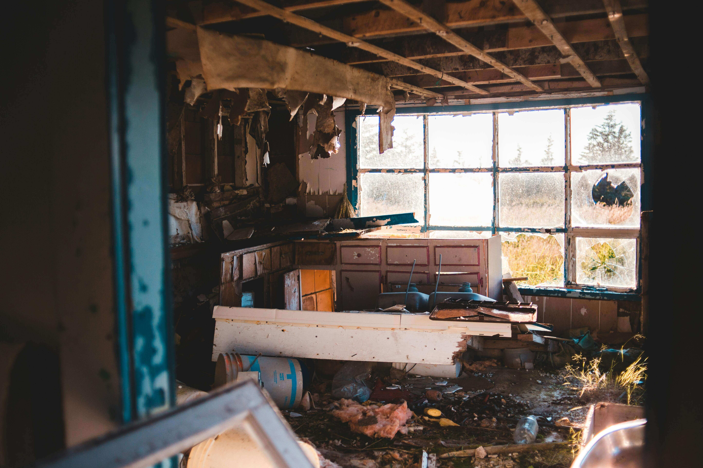
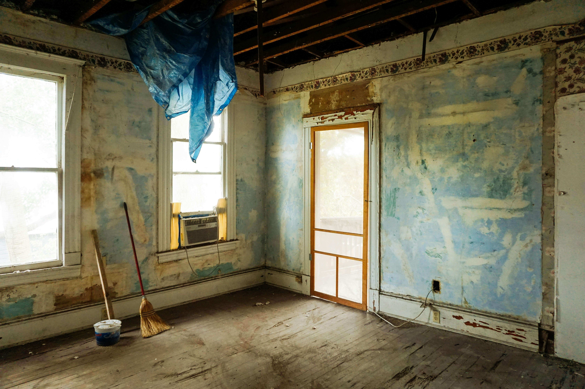

(833)
PROBAID
7762243

VACANT AND VULNERABLE: WHAT HAPPENS WHEN NO ONE SECURES THE PROPERTY
It happens more often than people realize. A loved one passes away, the home is left vacant, and no one takes charge of securing it.
Maybe the heirs live out of state. Maybe the trustee assumes the attorney will handle it. Maybe the entire family is still in shock and struggling to take the first step. Whatever the reason, the home sits empty, exposed, and completely vulnerable.
And when no one steps in, I have seen firsthand what can happen:
The home gets broken into.
Pipes burst and water damage spreads.
Mail piles up, signaling vacancy.
Squatters move in.
Neighbors start complaining.
Suddenly, what could have been a smooth probate or trust sale turns into a legal and financial headache. These problems not only delay the process but can also reduce the value of the estate, leaving everyone worse off.
This is why securing the property must be the very first step after it becomes vacant. And this is exactly where I step in.
I TAKE ACTION BEFORE THERE IS A PROBLEM

When I am brought into a case, securing the property is my top priority. I do not wait for issues to appear, and I do not wait for multiple approvals before acting on urgent needs. My role is to protect the asset immediately and prevent problems before they ever start.
Here are the first steps I take:
Change the locks to ensure no unauthorized access.
Shut off or manage utilities to avoid leaks, fires, or unnecessary expenses.
Install a lockbox or coded access so authorized parties can safely enter the home.
Ensure lighting, blinds, and mail are managed to prevent the appearance of vacancy.
Post appropriate signage if needed to keep trespassers out.
These may sound simple, but they make the difference between a property that remains safe and one that becomes a liability. My goal is clear: preserve the value of the property and keep the case moving forward without unnecessary setbacks.
I COORDINATE EVERYTHING, NO ONE HAS TO LIFT A FINGER

One of the biggest challenges for trustees, executors, and attorneys is figuring out who to call when a property needs attention. Should they contact a locksmith? A property manager? A city inspector?
That is where I step in. I take full ownership of the coordination process so no one else has to lift a finger. I work with reliable vendors, manage scheduling, and make sure everything gets documented.
For example:
If the home needs insurance as a vacant dwelling, I flag it immediately.
If the property risks city code violations, I arrange for preventive repairs.
If debris or hazards exist, I bring in cleanup crews.
No one is left scrambling, and no one is guessing what to do. Everything is handled smoothly and quickly.
I KEEP YOU IN THE LOOP, NOT IN THE MIDDLE
Attorneys should not be chasing down locksmiths or dealing with neighbor complaints. Trustees should not be spending hours calling utility companies. Heirs should not be worried about whether the mail is piling up.
When I manage a vacant property, I keep everyone properly informed without dragging them into the details. I send photo updates, document the condition of the property, and flag potential problems before they escalate.
This way, the attorney stays focused on legal work, the trustee feels supported, and the heirs know the property is being protected. Everyone has peace of mind without being overwhelmed by tasks they were never meant to handle.
I PREPARE THE HOME FOR MARKET STRATEGICALLY
Securing the property is the first step, but preparing it for sale is just as important. A vacant home can either attract buyers or create liability depending on how it is presented.
Once the property is safe and secure, I prepare it for the market strategically:
If it should be sold “as is,” I present it professionally to attract serious buyers.
If light cleanup or repairs will raise the value, I coordinate them.
If staging or professional photography will help, I arrange it.
Every decision is made with the estate’s best interest in mind. I consider the condition of the home, the market timeline, and the legal requirements of the trust or probate case. By doing this, I ensure the property is positioned correctly to sell quickly and for the best possible value.
THE RISKS OF LEAVING A PROPERTY UNSECURED
Some families underestimate the risks of leaving a property vacant and unsecured. They assume nothing will happen, only to face costly surprises later. Here are some of the most common issues I have seen:
BREAK-INS:
Empty homes are targets for theft. Appliances, copper pipes, and personal belongings can all be stolen.
WATER DAMAGE:
Burst pipes or roof leaks can go unnoticed for weeks, causing thousands in repairs.
SQUATTERS:
Once inside, removing unauthorized occupants requires legal action, creating further delays.
CITY VIOLATIONS:
Overgrown yards, broken windows, or unsafe conditions can lead to code violations and fines.
REDUCED PROPERTY VALUE:
Buyers are less likely to pay full price for a home with visible neglect or damage.
Every one of these risks delays the probate or trust case and creates stress for the trustee, heirs, and attorney. Preventing them is always easier than fixing them.
THE BOTTOM LINE
A vacant home is a vulnerable home. And when no one secures it, that vulnerability spreads to the heirs, to the attorney, and to the case itself.
That is why I step in immediately. I secure the property, protect its value, and document every step. I keep attorneys and trustees informed without dragging them into unnecessary tasks. And I make sure the property is prepared for market in the right way, at the right time.
If the property is vacant and no one knows what to do next, I do.
FREQUENTLY ASKED QUESTIONS
WHAT SHOULD BE DONE FIRST WHEN A PROBATE PROPERTY IS LEFT VACANT?
The first step is to secure the property by changing locks, managing utilities, and ensuring it does not look abandoned. This prevents damage, theft, or legal issues.
DO VACANT PROBATE HOMES NEED SPECIAL INSURANCE?
Yes, many standard homeowner policies do not cover vacant homes. Executors and trustees should review insurance needs to ensure the property is fully protected.
CAN LEAVING A PROPERTY VACANT DELAY PROBATE OR TRUST SALES?
Absolutely. Break-ins, damage, or city violations can all cause costly delays. Securing the home right away helps avoid these problems and keeps the case on track.
PROTECT THE PROPERTY. PROTECT THE ESTATE. PROTECT THE CASE.
Probate and trust cases already involve enough stress without adding property risks into the mix. A vacant home should not become a liability. With the right probate-trained real estate partner, the property stays secure, safe, and market-ready.
At 833PROBAID.com, we specialize in handling probate, trust, and conservatorship properties. If you are an attorney, trustee, or executor managing a vacant home, let us take this responsibility off your plate. We secure the property, prevent delays, and keep your case moving forward.
 833PROBAID.com
833PROBAID.com
 Info@833PROBAID.com
Info@833PROBAID.com
Call (833) PROBAID today for a free, no-obligation consultation. Protect the property. Protect the estate. Protect the case.